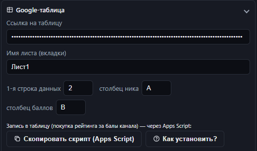
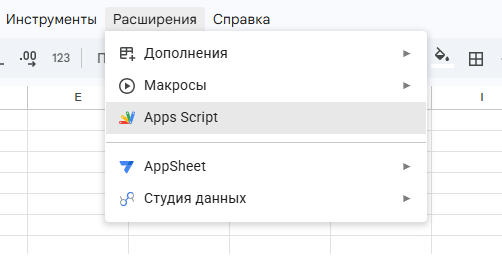
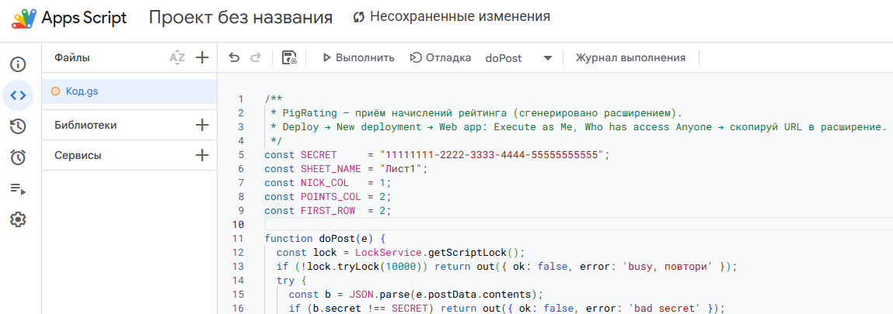
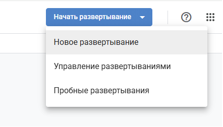
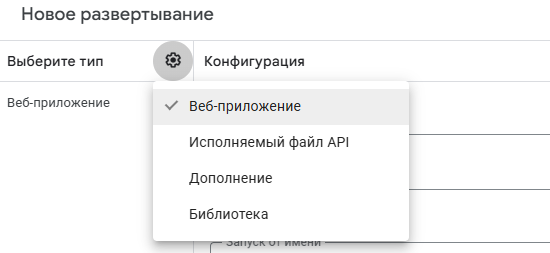
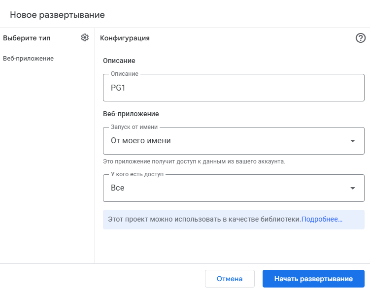
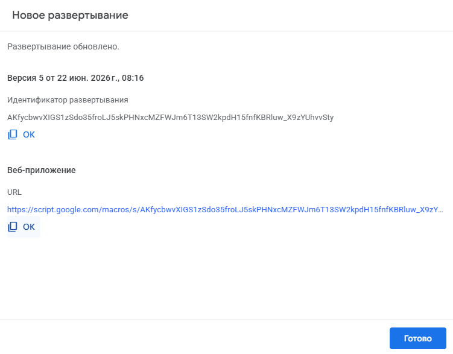
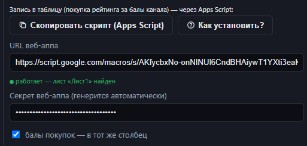

🐷 Установка скрипта
Покупка рейтинга за балы канала: скрипт даёт расширению право дописывать баллы в твою Google-таблицу. Ставится один раз, бесплатно, без Google Cloud.
Что нужно
- Google-аккаунт, в котором лежит твоя таблица.
- Сама таблица: доступ «по ссылке — просмотр» (для чтения; запись пойдёт через скрипт).
- Для создания наград на Twitch — канал со статусом Affiliate/Partner. Но скрипт и запись в таблицу работают и без этого.
Шаги
- В расширении открой ⚙️ Настройки → Google-таблица и заполни: ссылку на таблицу, имя листа (вкладки), столбцы ника и баллов, 1-ю строку. Эти значения вшиваются прямо в скрипт.

- Нажми «📋 Скопировать скрипт». Расширение соберёт код с твоими настройками и сгенерирует секрет (сохранится автоматически) — всё уже в буфере обмена.
Если в ссылке нет
#gidи не задано имя листа — скрипт будет писать в первый лист. Лучше задать имя листа. - Открой свою Google-таблицу → меню Расширения → Apps Script.

- В редакторе удали весь код по умолчанию (
function myFunction() {…}) и вставь скопированный: Ctrl+A, затем Ctrl+V. Сохрани (Ctrl+S).
- Справа вверху нажми Начать развёртывание → Новое развёртывание.

- У «Выберите тип» нажми шестерёнку ⚙️ → выбери Веб-приложение.

- Настрой два поля в «Конфигурация»:
- Запуск от имени
- От моего имени — чтобы скрипт писал в таблицу под твоим аккаунтом.
- У кого есть доступ
- Все — обязательно! По умолчанию стоит «Только у меня» — поменяй на «Все».

Это важно: при «Только у меня» (или «Все, у кого есть аккаунт Google») расширение получит страницу логина вместо ответа, и индикатор покажет «не JSON». - Нажми Начать развёртывание. Google попросит авторизацию:
- Выбери свой аккаунт.
- Экран «Google не проверил это приложение» → Дополнительно → Перейти к … (небезопасно) → Разрешить.
Это нормально и безопасно — приложение твоё собственное, оно работает только с твоей таблицей. - Скопируй URL веб-приложения — он заканчивается на
/exec.
- Вставь URL в расширении в поле «URL веб-аппа». Индикатор станет 🟢 работает.

Готово. Теперь покупки рейтинга за балы канала будут дописываться в таблицу.
Как обновить скрипт
Если поменял настройки таблицы или вышла новая версия расширения — пересними скрипт, чтобы URL не менялся:
- В расширении снова «Скопировать скрипт».
- В Apps Script вставь код поверх старого, сохрани.
- Развернуть → Управление развёртываниями → ✏️ (карандаш) → Версия: Новая версия → Развернуть. URL остаётся прежним.
Если сделать «Новое развёртывание» — получишь новый URL, тогда вставь его в расширение заново.
Если что-то не так
- 🔴 «Веб-апп вернул не JSON»
- Проверь развёртывание: тип = Веб-приложение, доступ = Все, запуск = Я, и что URL заканчивается на
/exec. Часто помогает «Новая версия» деплоя. - 🔴 «неверный секрет / bad secret»
- Секрет в расширении не совпал со скриптом. Нажми «Скопировать скрипт» ещё раз и задеплой новую версию.
- «broadcaster doesn't have partner or affiliate status»
- Это уже про награды Twitch: создавать награды за баллы канала может только канал со статусом Affiliate/Partner. К установке скрипта не относится.
Эта страница — часть расширения PigRating. Закрой вкладку, когда закончишь.